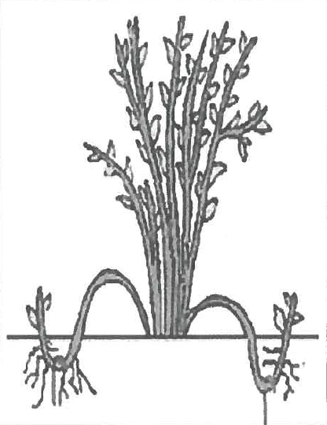

What is an Herb
What is a Spice?
For centuries, people have grown and harvested herbs for their flavors, scents, dye colors, healing assets, historic ties and even seductive properties. They are enjoyed for their beauty in the garden or dried for wreaths, flower arrangements, and potpourri. Herbs can be grown from seed, propagated asexually, or purchased from garden centers.
As a plant group, herbs are non-woody annuals, perennials, and biennials. They contain chemicals in their seeds, flowers, leaves, fruits, or roots that enhance their flavor or aroma. Recently gardeners have become more interested in growing and using herbs. Although herbs are popular now, herb gardens and uses of herbs have existed for a long time.
Herb or Spice? How do you know if you are using an herb or a spice in cooking?
- Herbs are grown in temperate (moderate; the zones between the tropics and the polar regions of Earth) regions, and generally, herbs are fresh or dried leaves, while spices involve seeds, roots, fruits, flowers, and bark. Herbs are green and have a milder flavor.
- Spices come from tropical (regions lying between the tropic of Cancer and the Tropic of Capricorn, extending around the equator where the temperature and humidity are high) regions. Spices tend to be brown, black, and red, with a stronger, pungent flavor. However, the terms herb and spice are artificial categories and not of major concern.
A non-culinary, general definition of an herb is any useful plant.
Site
Many herbs are quite adaptable to a variety of growing conditions except for poor drainage. Some are drought-tolerant; several are perennials, and many are pest- and disease-resistant. The optimum growing conditions vary with each herb species. Some of the herbs familiar to Ohio - such as lavender, rosemary, thyme, marjoram, dill, and oregano - are native to the Mediterranean region. These herbs grow best in soils with excellent drainage, bright sun and moderate temperatures. Most annual and perennial herbs grow best with at least six hours of direct sun.
Soil & Drainage
Soil. Herbs are tolerant of many soil types but grow best in a neutral (pH of 6.0 to 7.0), loamy soil amended with organic matter. Test the soil, then add amendments and fertilizers based on the test results. Home gardeners in Ohio may need to amend the existing soil to improve soil structure. The soil should be coarse enough to have adequate drainage, yet fine enough to hold some water. Adding a bulky, organic humus or straw-based, well-rotted manure will help to create the desired soil structure. Also, wait until soils warm before planting.
Drainage. Excellent drainage is critical for growing most herbs. Many herbs can live in poor soil but very few can survive with water-logged soil. Before planting, loosen soil to a depth of eight to 12 inches breaking up large clods. Add bulky, organic matter at a rate of one part organic matter to four parts native soil to improve drainage, if necessary.
The home gardener may decide to use containers, raised beds or mounds for growing herbs. Not only do raised beds drain better, but they also allow soil to warm earlier in spring.
Spacing
Herbs stay healthier and look more pleasing if they are not crowded. Ample space between plants allows good air circulation while better displaying their interesting foliage. Space your herbs properly, allowing for the mature size of each plant. Plants will grow to their mature size based on the availability of light, nutrients, proper soil structure, and water.
Landscape Uses
Herbs are good candidates for growing in containers. If there isn’t a sunny location in the yard, herbs can be grown in containers placed on a sunny porch, terrace, or patio. Herbs also can be used in window boxes. Those easily grown in containers include thyme, mint, parsley, basil, sage, marjoram, and oregano.
If herbs are grown for culinary purposes, it is wise to grow them close to the kitchen where they can be harvested easily for cooking. Common culinary herbs are parsley, basil, oregano, dill, chives, thyme, sage, and mint.
Creeping or mat-forming herbs can be used as ground covers. Creeping herbs can be grown between patio and pathway stones, giving off a pleasant scent when stepped on. They also serve as a deterrent to weeds that compete for these nooks and crannies.
Certain herbs are beautiful additions to wall plantings. Following is a list of herbs suited to wall plantings, use between stones, and as ground covers: mother-of-thyme, woolly thyme, creeping thyme, Corsican mint, creeping golden marjoram, Roman chamomile, and creeping woolly yarrow.
Herbs can be interspersed with flowers or vegetables or used as a border. A traditional herb garden design is a geometrical pattern that highlights contrasting shapes, colors, and textures.
Selection
Herb names can be confusing. For example, Monarda didyma is commonly known as “Oswego Tea,” “Bee Balm,” “Mountain Mist,” and “Mountain Balm.” Knowing the genus and specific epithet of the plant you wish to grow will avoid confusion. Many herbs, such as thyme, have many cultivars within the species. They vary widely in size and growth pattern. Within some genera, there are species that are edible and some that are not. Knowing what you are buying and properly labeling the plant is very important.
Annuals, Biennials, & Perennials
Herbs can either be an annual, biennial or perennial depending on whether they need to grow from seed each year or come back from overwintering crowns, roots, or bulbs. Annual herbs can be grown easily from seed. They may self-seed year to year if allowed to form mature seed heads. Common herbs grown as annuals in Ohio include basil, borage, calendula, chervil, coriander/cilantro, dill, marjoram, nasturtium and summer savory.
Biennial herbs such as parsley are often treated as annuals with new herbs planted each year. The entire plant should be harvest and removed its second year before blooming. Once flowering begins, very little usable foliage is produced. Instead, the plant's energy is focused on flowering and seed production.
Perennial herbs should be given a permanent location in the garden where they can grow undisturbed year after year. Perennial herbs require periodic division to remain healthy and productive. Divide perennial herbs when they show decline, become woody or overgrown, or when you want new starts. Common perennial herbs are angelica, burnet, chive, comfrey, horseradish, lavender, lemon balm, lovage, mint, oregano, rosemary, rue, sage, tansy, tarragon, thyme, winter savory, and yarrow.
Herbs are often lost over winter by too soggy of soil, harsh winds or cold temperatures. To increase winter survival, try improving soil drainage and adding mulch to keep plants from heaving (a condition when plants are pushed up out of the ground as the soil freezes and thaws during the winter months).
Chart of Some Common Annual & Perennial Herbs
Common Annual Herbs
|
Common Name |
Cultural Hints |
Uses |
|
Basil |
Grow from seed in full sun. Remove flowers to ensure greatest foliage flavour. |
Edible leaves. Use to flavour soups, stews, tomato dishes, meat, game, fish, egg dishes, herb butters, and herb vinegars. |
|
Borage |
Grow from seed in full sun. Grows rapidly and self sows. Attracts bees and other beneficial insects. |
Edible flowers and leaves. Cucumber-like flavor use in salads, soups, or stews and beverages. |
|
Chervil |
Direct sow seeds in full sun. |
Edible leaves. Use same way as parsley is used in soups, salads, sauces, and cheese and egg dishes. |
|
Cilantro / Coriander |
Grow from seed in full to part sun. |
Edible leaves. Use in salsa, fish, and chicken dishes. If you let cilantro flower, it forms seeds that mature to a brown color. The seed is known as coriander. |
|
Dill |
Grow from seeds in full sun. |
Edible foliage and seeds used in flavoring and pickling. |
|
Marjoram |
Grow from seed or cuttings. Full sun in well-drained soil. |
Edible foliage. Use in soups, egg dishes, beef, and chicken dishes, sausages, cheese, and tomato dishes. |
|
Nasturtium |
Direct sow seeds in full sun to part sun. Drought tolerant; clump or vining varieties. |
Edible foliage and flowers. use in green salads, potato salads, and egg dishes as well as vinegars. |
|
Parsley |
Grow from seed, slow to germinate. Grows in full sun to part shade. |
Edible foliage. Use as a garnish or to flavor stews, soups, and other vegetables. Larval plant for Eastern Black Swallowtail. |
|
Summer Savory |
Grow from seed. Full sun in well-drained soil. |
Edible foilage. Use in meat, soup, vegetable dishes, and salads. |
Common Perennial Herbs
|
Common Name |
Cultural Hints |
Uses |
|
Chives |
Grow from seed or by division. Full sun; drought tolerant. |
Edible foliage. Cut long strands at base. use to flavour salads, dips, soups, stews, vinegars, cheese dishes, sour cream, and butter. |
|
Fennel |
Direct sow seeds in full sun. |
Edible foliage, stems, and seeds. Use in fish dishes, soup, and stews, and fennel seed is used in sausage. |
|
French Tarragon |
Grow from cuttings or root divisions in full sun or semi-shade. |
Edible foliage. Use in vinegars, oils, marinades, and salads. |
|
Lavender |
Grow from cuttings in full sun and extremely well-drained soil. |
Edible flowers. Use in beverages as well as for pork, fish, and chicken dishes. Use for scenting potpourri and sachets. |
|
Lemon Balm |
Grow from seed, division, or stem cuttings in full sun to partial shade. To prevent spreading, prune flowers before they have a chance to set seed. |
Edible foliage. Use in salads, stews, soups, fish, pork, and egg dishes. It is also used in making jellies, teas, and vinegars. |
|
Lemon Verbena |
Tender perennial. Grow from cuttings in full sun. |
Edible foliage. Use to flavor beverages, salads, jellies, sauces, soups, fish, and meat dishes. |
|
Mints |
Grow from cutting or division in full sun or partial shade. Very aggressive grower; spreads by underground rhizomes. Suggest growing mint in containers above ground. |
Edible foliage. use with veal, lamb, and pork dishes as well as beverages and jellies. |
|
Oregano |
Grow from seed or cuttings in full sun or part shade. |
Edible foliage. Use in sauces, tomato dishes, pizza, Mexican dishes, salads, and soups. |
|
Rosemary |
Tender perennial. Grow from seed, but best propagated from stem cuttings. Full sun. Drought tolerant. |
Edible foliage. use in fish, port, lamb, poultry, and game. |
|
Sage |
Grow from seeds or cuttings in full sun. |
Edible foliage. Use in fish, pork, poultry, and vegetable dishes. Also in sausages. |
|
Thyme |
Grow from seed, easier to grow from divisions or cuttings in full sun. |
Edible foliage. Use in soups, stews, casseroles, stuffing, and poultry dishes. |
Growing Herbs
Growing Herbs from Seed
Most herbs, particularly annuals, can be grown from seed. Direct-sow the seeds or start them indoors. Borage, anise, caraway, chervil, coriander, cumin, dill, and fennel are somewhat difficult to transplant and should be direct sown. Some perennial seeds take six to eight weeks just to germinate. Factor this into determining when to sow indoors. Instructions on the seed packet provide information on when to sow. Follow packet instructions for light or darkness to germinate (covered by soil or uncovered) and any special treatments, such as soaking, chilling, or scarifying.
Harden off seedlings when four true leaves have formed. Use a one-quarter-strength, water-soluble fertilizer solution when the plants are transplanted into the garden. If you are tempted to rush the transition to outdoors, remember that herbs generally do not thrive in cold soil.
Asexual Propagation of Herbs

Simple Layering
Many perennial herbs can be propagated by division, layering, and cuttings. Divide perennial herbs that begin to decline to maintain plant health and vigor.
Early spring is the best time to make divisions. Dividing can also be done in early fall. Dig and lift the parent plant. Depending on size, cut or break apart sections of the crown and roots. Then replant. Bulbous roots of chives and garlic can be pulled apart and replanted. Fleshy-rooted herbs, such as horseradish, ginger, and lovage, should be dug up and sliced apart with a sharp knife, then replanted.
Many herbs also can be propagated easily by layering. These include rosemary, marjoram, chamomile, horehound, hyssop, sage, winter savory, and thyme. Select branches near the base of the parent plant. Pull off side branches and leaves and press the stem into the soil. Weight it in place with a stone or pin it with a wire. Keep soil moist until the layered stem forms roots. Sever the newly rooted plant from the parent and move it to its new location.
Many herbs can be started from cuttings. These include scented geraniums, lavender, rosemary, lemon verbena, curry plant, hyssop, clove pink, rue, santolina, artemesia, sage, myrtle, and shrubby thymes.
Take three-inch stem cuttings from healthy, non-woody shoots. Cut below a node. Remove foliage from the bottom half of the stem and treat as outlined in the Plant Propagation module.
Watering & Fertilizer
Most herbs grow and produce satisfactorily when they receive one inch of water per week by rainfall or supplemental watering. Some herbs, such as mint, rosemary, chervil, and sweet woodruff, grow better with more moisture. Others, such as lavender, artemesia, sage, thyme, and oregano, require less moisture. Use one to two inches of organic mulch to conserve soil moisture.
Fertilization of most herbs should be done sparingly. Many herbs will produce poor quality aromas and flavors if heavily fertilized. Apply fertilizer based on soil test recommendations. Apply inorganic fertilizers once in midsummer. Use well-rotted manure early in the season as a slow-released source of nutrients. Lavender, thyme, rosemary and rue do best in an alkaline soil. Follow the recommendations of a soil test when adding lime to make the soil more alkaline.
Disbudding
Many herbs develop their best aromas or flavors just before or at bloom time, so many herb gardeners remove flower buds to maintain peak quality. For annual herbs, disbudding also helps maintain plant growth. If left to go to seed, these herbs will stop producing new growth. Basil and mint are two examples of such herbs that benefit from disbudding for maximum leaf production. The exceptions are herbs like caraway and coriander (also called "cilantro") that are raised for their seeds.
Certain herbs, such as dill and fennel, will self-seed. If gardeners don't want these seedlings, they should disbud the plants before seeds ripen and scatter.
Harvesting & Storing
The timing of harvest is critical to capturing peak herb flavor. Since it is difficult to judge readiness by appearance, try testing plants for the desired smell or taste.
Fresh leaves can be harvested any time during the growing season for immediate use. Here are some general rules for harvesting herbs:
- Never harvest when wet from either dew or rain. Harvest in the morning on a dry, sunny day after the dew has dried. Foliage, petals, pods, and bark must be dry.
- Harvest herbs by early afternoon. Transpiration occurs late in the day, lowering levels of the aromatic chemicals as moisture leaves the plant.
- Harvest leaves just before flowers bloom. Fragrances that attract insects for pollination will be at their peak.
- Harvest flowers, such as roses and lavender before blooms are fully open.
- Gather seeds as their color begins to change from green to brown or gray.
The flavors and aromas in herbs are volatile. This means they are readily released as gases into the air. Store herbs carefully to protect this volatile nature and retain their maximum aroma and flavor. One of the best storage methods is freezing herbs in airtight containers. Freezing methods can preserve the flavor of many herbs for six to eight months.
While drying is one of the most popular methods of preserving herbs, dried herbs can lose some of the desired flavor or aroma. An oven or microwave can speed the drying process, but this method must be done carefully or much of the flavor and aroma may be lost.
Air-drying is the simplest method of all to preserve herbs. To dry leaves, choose disease-free foliage and cut stems with leaves attached. To dry smaller amounts, place stems in a single layer on paper towel or cheesecloth in a well-ventilated room out of direct sunlight. Stir or turn once or twice a day until dry and crumbly. Exposure to moist air and crushing will reduce the quality of herb essences. Generally, more succulent herbs with thick, fleshy leaves will take longer to dry.
To dry larger amounts, tie bunches of stems together with string or rubber bands. The stem bunches should be hung in a warm, dark, dust-free, well-ventilated area. Herbs grown for seed, such as dill, fennel, coriander, and caraway, can be dried on screens or inside brown paper bags.
When leaves are dry and crisp, strip them from stems and store in appropriate containers. Seeds are dry when they fall from the seed head. All plant tissues must be thoroughly dry before storing. Herbs should be stored in opaque or dark glass containers with tightly fitting lids. If containers are clear, store out of direct sunlight. Store all herbs in a cool place, not next to the stove.
Pest & Sanitation
Herbs seem to be less susceptible to pests and disease infection. The fragrance and flavor of herbs have evolved over the years to defend or perpetuate the life of these plants. Chemicals in herbs may attract or repel insects, or warn animals not to nibble.
However, herbs are not immune to insects and disease problems. Protect new seedlings from cutworms. Damping-off is a problem when seeds are sown in unsterile soil. Use the same methods of protection for these problems as you would with flower and vegetable transplants.
Following good sanitation practices will help to maintain disease- and pest-free herbs. Keep the garden free of weeds during the growing season. Mulching with one to two inches of organic matter, such as humus or grass clippings help to control weeds, as well as to retain moisture. Native Mediterranean herbs, such as rosemary, thyme, sage, and lavender, may grow better when mulched with a layer of gravel or small pebbles.
Many herbs are susceptible to aphids, whiteflies, and spider mites. Certain herbs may be eaten by slugs. Handpick, trap, and spray with water to control these insects. If herbs are to be eaten, special care must be taken in pesticide use. Use pesticides only if the herb is listed on the pesticide’s label. Wait the number of days specified between application and harvest.
Rots, mildews, and wilts will attack herbs, especially if plants are spaced too closely or grown in poorly drained soil. Poor ventilation and soggy soils promote fungal and bacterial growth above and below ground.
Good cultural practices reduce the chance of infection by disease-causing organisms. Prompt cleanup of debris will reduce the populations of disease-causing organisms in the garden. Practice crop rotation of annual herbs to avoid growing the same herbs in the same place year after year.
For successful herb growing, know the particular cultural requirements of each plant you choose.
Resources
Recommended Resources & Links to Bookmark:
- Bremness, L. 1992. The Complete Book of Herbs. Southern Book Pub.
- Herb Society of America - Founded in 1933 in Washington, DC, the Herb Society of America (HSA) is now based in Kirtland, OH and has 40 units throughout the United States. Visit the HSA website for several publications listed under the "Grow" and "Learn" tabs.
- Mackin, J. 1993. The Cornell Book of Herbs & Edible Flowers. Cornell Cooperative Extension.